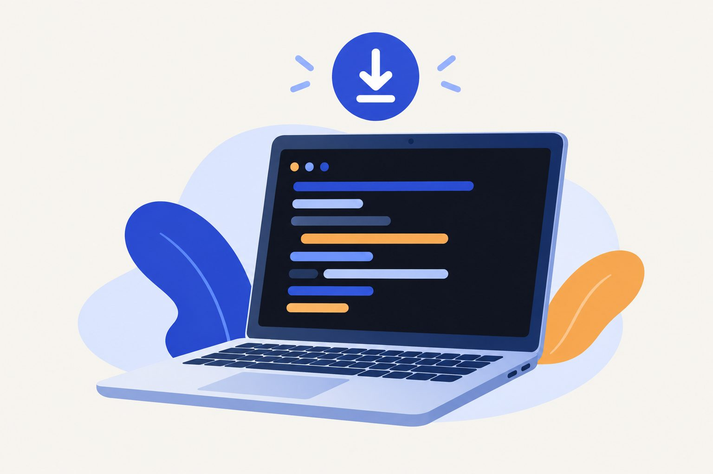
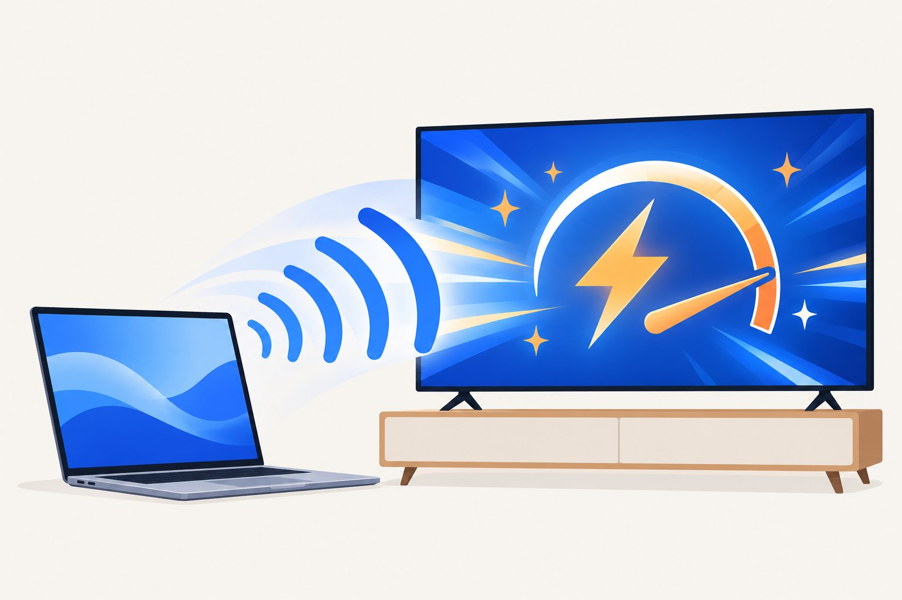
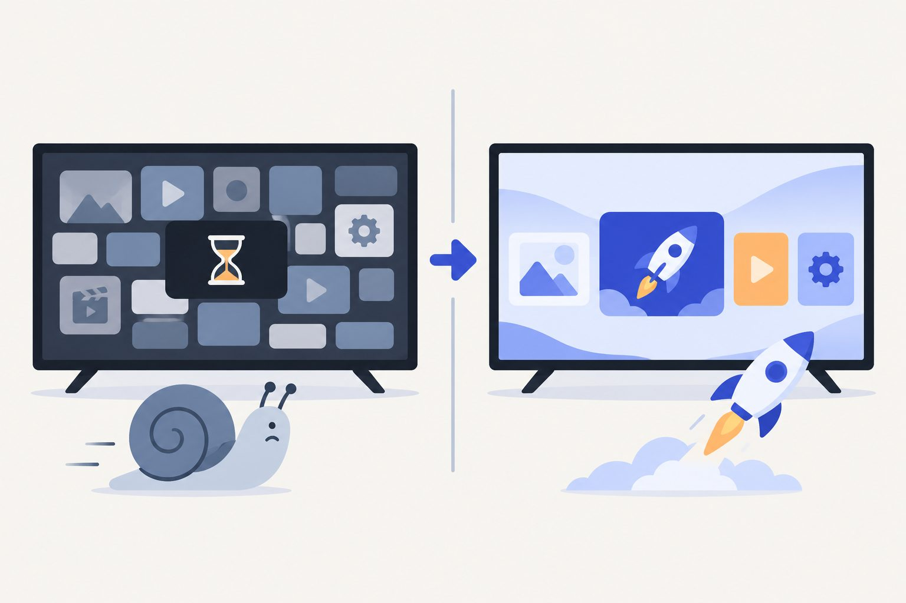
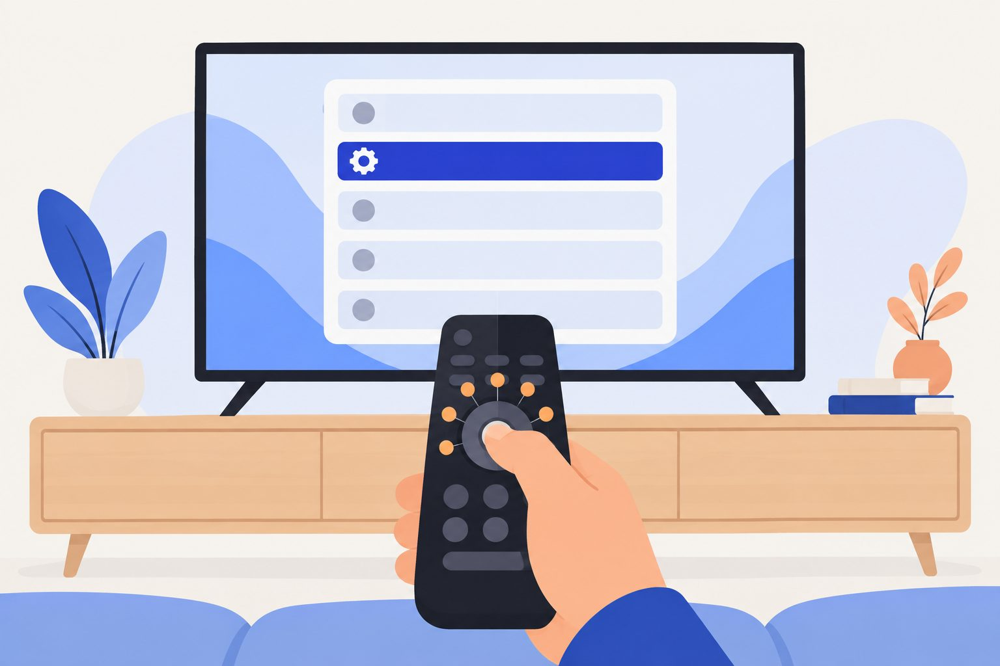
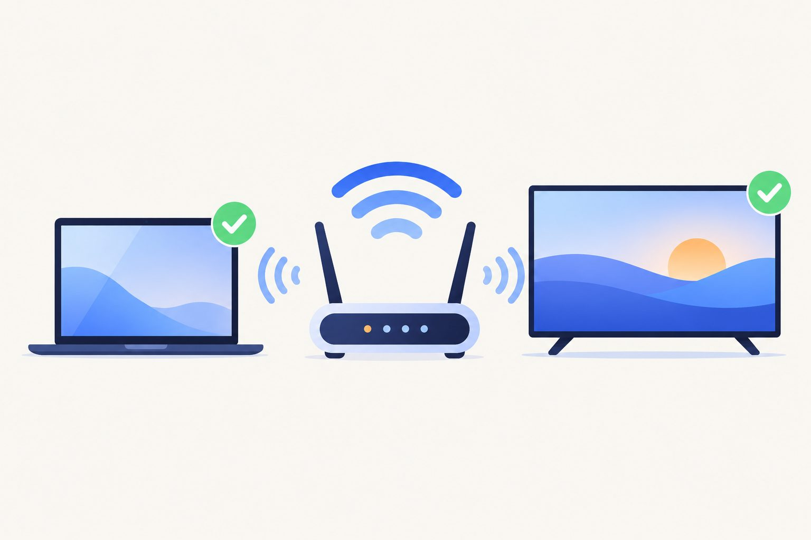
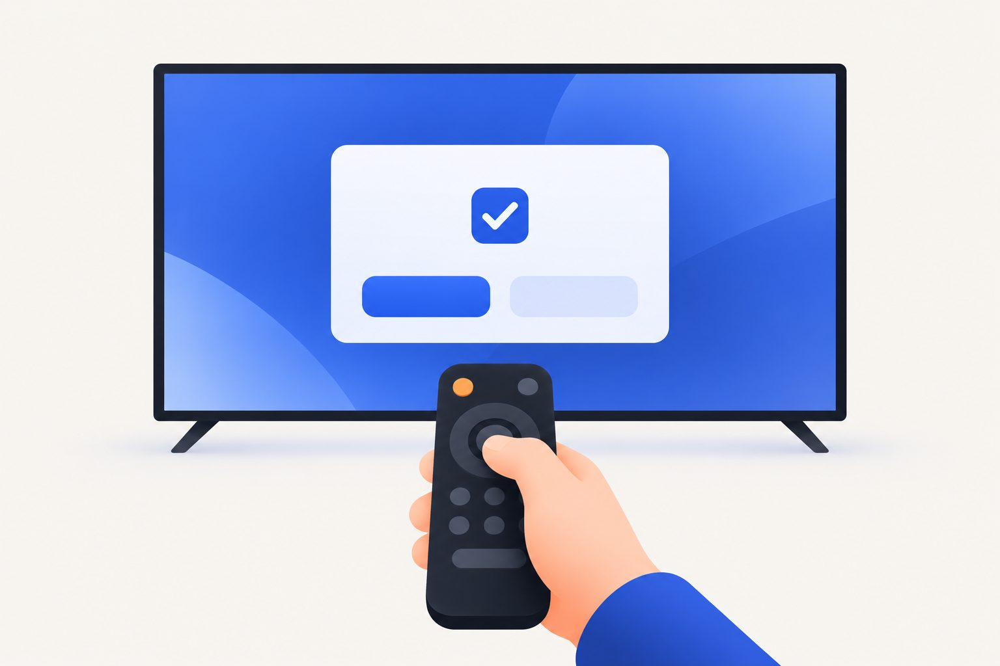
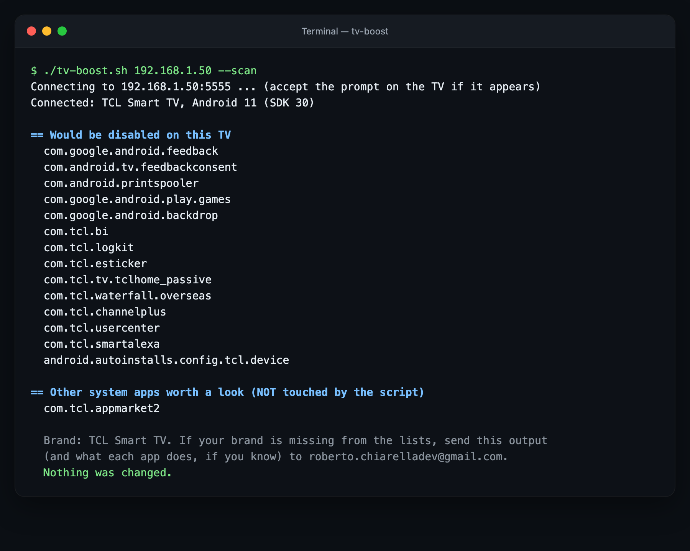
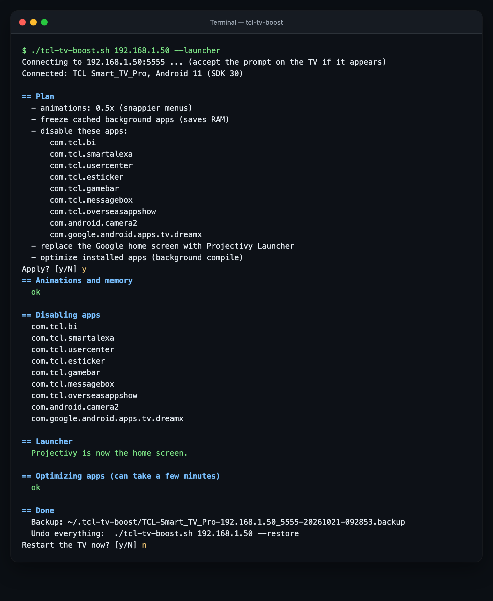
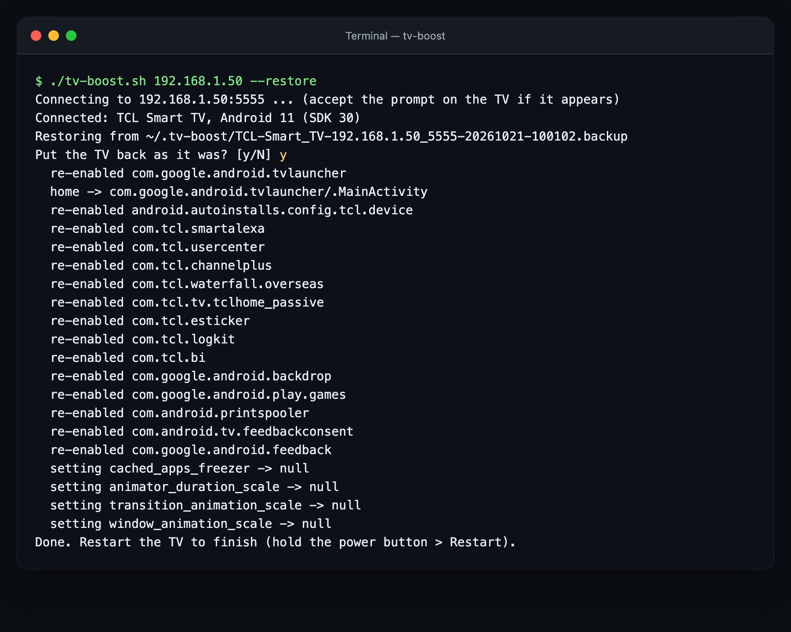

StepPasso
Install adb on your computer
Installa adb sul computer
adb is Google's free tool for talking to Android devices.
adb è lo strumento gratuito di Google per comunicare con i dispositivi Android.
Most Android TVs have 2 GB of RAM or less, and the maker fills it with tracking, promo and shop-demo services. This free script, run from your computer over Wi-Fi, switches them off, speeds up the menus and can swap the heavy home screen for a light one. Works on TCL, Sony, Xiaomi, Philips, Hisense, Nvidia Shield, Chromecast and most other Android TV and Google TV devices.
Quasi tutte le Android TV hanno 2 GB di RAM o meno, e il produttore la riempie di servizi di tracciamento, promozioni e demo da negozio. Questo script gratuito, lanciato dal computer via Wi-Fi, li spegne, rende i menu più rapidi e può sostituire la pesante Home con una leggera. Funziona su TCL, Sony, Xiaomi, Philips, Hisense, Nvidia Shield, Chromecast e quasi tutte le altre Android TV e Google TV.


You need a computer (Mac, Linux or Windows) on the same Wi-Fi as the TV, and the remote.
Ti servono un computer (Mac, Linux o Windows) sulla stessa Wi-Fi della TV, e il telecomando.

adb is Google's free tool for talking to Android devices.
adb è lo strumento gratuito di Google per comunicare con i dispositivi Android.

On some models About is under Device Preferences.
Su alcuni modelli Info è in Preferenze dispositivo.

Settings › Network & Internet, select your Wi-Fi: the address looks like 192.168.1.50. TV and computer must be on the same network.
Impostazioni › Rete e Internet, scegli la tua Wi-Fi: l'indirizzo è tipo 192.168.1.50. TV e computer devono stare sulla stessa rete.

In the Terminal, using your TV's address:
Nel Terminale, con l'indirizzo della tua TV:
curl -LO https://robchdev.github.io/portfolio/tools/tcl-tv-boost/tv-boost.sh
chmod +x tv-boost.sh
./tv-boost.sh 192.168.1.50 --scanThe TV asks Allow USB debugging?: tick Always allow and press OK. The scan lists what the script would switch off on your TV, plus other apps worth a look, without touching anything.
La TV chiede Consentire il debug USB?: spunta Consenti sempre e premi OK. L'analisi elenca cosa lo script spegnerebbe sulla tua TV, più altre app da valutare, senza toccare niente.
./tv-boost.sh 192.168.1.50 --launcherType y to confirm. --launcher also installs the light home screen Projectivy Launcher (free, Play Store): the script opens its page on the TV, you install it with the remote and press Enter. If it doesn't become the home screen, the change is undone on its own. Leave out --launcher to keep your current home.
Scrivi y per confermare. --launcher mette anche la Home leggera Projectivy Launcher (gratis, Play Store): lo script apre la sua pagina sulla TV, la installi col telecomando e premi Invio. Se non diventa la Home, la modifica si annulla da sola. Senza --launcher resta la Home attuale.
Changed your mind? ./tv-boost.sh 192.168.1.50 --restore puts everything back.
Ci hai ripensato? ./tv-boost.sh 192.168.1.50 --restore rimette tutto com'era.
| Brand | Marca | Support | Supporto |
|---|---|---|---|
| TCL, Thomson, Hitachi, ffalcon | Own list (TCL software) | Elenco dedicato (software TCL) | |
| Sony Bravia | Own list | Elenco dedicato | |
| Xiaomi, Redmi (TV, Mi Box) | Own list, PatchWall replaced with --launcher | Elenco dedicato, PatchWall sostituita con --launcher | |
| Philips | Own list | Elenco dedicato | |
| Hisense (Android / Google TV) | Own list | Elenco dedicato | |
| Nvidia Shield, Skyworth, Panasonic, Haier, XGIMI | Short list of their own | Elenco breve dedicato | |
| Chromecast, Google TV Streamer, onn, OnePlus, Sharp, Toshiba, JVC and others | Chromecast, Google TV Streamer, onn, OnePlus, Sharp, Toshiba, JVC e altre | Google, tracking and demo lists; --scan for the rest | Elenchi Google, tracciamento e demo; --scan per il resto |
| Samsung (Tizen), LG (webOS), Hisense VIDAA | Samsung (Tizen), LG (webOS), Hisense VIDAA | Not supported: they are not Android | Non supportate: non sono Android |
| Change | Modifica | Why | Perché |
|---|---|---|---|
| Animations at 0.5x | Animazioni a 0,5x | Menus feel instant | I menu sembrano istantanei |
| Freeze cached background apps (Android 11+) | Congela le app in background (Android 11+) | Idle apps stop using CPU and RAM | Le app ferme smettono di usare CPU e RAM |
| Switch off the maker's and Google's extras: analytics, screen-recognition tracking (Samba TV, ACR), shop demo, promo rows, auto-installers, screensaver… | Spegne gli extra del produttore e di Google: statistiche, riconoscimento di cosa guardi (Samba TV, ACR), demo da negozio, righe promozionali, installazioni automatiche, salvaschermo… | Fewer services always running | Meno servizi sempre accesi |
--launcher: Projectivy as home screen | --launcher: Projectivy come Home | The Google TV home is the heaviest app on the TV | La Home di Google TV è l'app più pesante della TV |
| Background app compile | Ottimizzazione delle app | Apps open faster | Le app si aprono prima |
The lists are at the top of the script, one per brand: delete a line to keep that app. Only apps that exist on your TV are touched, and a protection list keeps out what the TV needs: inputs and HDMI, the remote, system updates, Play Store, keyboard, Chromecast and voice search.
Gli elenchi sono in cima allo script, uno per marca: cancella una riga per tenere quell'app. Vengono toccate solo le app presenti sulla tua TV, e una lista di protezione tiene fuori ciò che serve alla TV: ingressi e HDMI, telecomando, aggiornamenti, Play Store, tastiera, Chromecast e ricerca vocale.

--scan).--scan).
--launcher.--launcher.
--restore). These outputs come from the simulated TV used for testing.--restore). Questi output vengono dalla TV simulata usata per i test.Tested on a real TV. The script has been run end to end on a TCL with Android TV 11 (scan, apply, restart). The lists for the other brands come from debloat lists tested on real TVs by other people. Start with --scan, and tell me how it went on yours.
Provato su una TV vera. Lo script è stato usato dall’inizio alla fine su una TCL con Android TV 11 (analisi, applicazione, riavvio). Gli elenchi delle altre marche vengono da liste provate su TV vere da altre persone. Parti con --scan e fammi sapere come è andata sulla tua.
It doesn't uninstall anything or touch system files: it switches off apps and changes three settings, all restorable. Even without the backup, a factory reset brings everything back.
Non disinstalla niente e non tocca i file di sistema: spegne app e cambia tre impostazioni, tutto ripristinabile. Anche senza backup, un ripristino di fabbrica riporta tutto com'era.
It uses only the standard Developer options, no root and no unlocking. Still, use it at your own risk.
Usa solo le normali Opzioni sviluppatore, niente root e niente sblocchi. Resta comunque a tuo rischio.
Yes: see the table above. If your brand has no list of its own, the script still applies the Google, tracking and demo lists, and --scan shows other candidates: send me that output and I'll add your brand.
Sì: vedi la tabella sopra. Se la tua marca non ha un elenco suo, lo script applica comunque gli elenchi Google, tracciamento e demo, e --scan mostra altre app candidate: mandami quel risultato e aggiungo la tua marca.
It can happen: run the script again.
Può succedere: rilancia lo script.
Check that the TV is on (not in standby) and on the same Wi-Fi, that USB debugging is on and that you accepted the prompt on the TV. Some models also need Network debugging.
Controlla che la TV sia accesa (non in standby) e sulla stessa Wi-Fi, che il Debug USB sia attivo e che tu abbia accettato la richiesta sulla TV. Alcuni modelli vogliono anche il Debug di rete.
MIT license. Not affiliated with any TV maker or Google. App lists based on cleanyourtv and Universal Android Debloater. Projectivy Launcher is a free third-party app. Illustrations made with AI.
Licenza MIT. Non affiliato con alcun produttore di TV né con Google. Elenchi delle app basati su cleanyourtv e Universal Android Debloater. Projectivy Launcher è un'app gratuita di terzi. Illustrazioni create con l'AI.